Tutorial¶
First of all, let us import the PICOS module and cvxopt
>>> import picos as pic
>>> import cvxopt as cvx
We now generate some arbitrary data, that we will use in this tutorial.
>>> pairs = [(0,2), (1,4), (1,3), (3,2), (0,4),(2,4)] #a list of pairs
>>> A = []
>>> b = ( [0 ,2 ,0 ,3 ], #a tuple of 5 lists, each of length 4
... [1 ,1 ,0 ,5 ],
... [-1,0 ,2 ,4 ],
... [0 ,0 ,-2,-1],
... [1 ,1 ,0 ,0 ]
... )
>>> for i in range(5):
... A.append(cvx.matrix(range(i-3,i+5),(2,4))) #A is a list of 2x4 matrices
>>> D={'Peter': 12,
... 'Bob' : 4,
... 'Betty': 7,
... 'Elisa': 14
... }
Let us now create an instance prob of an optimization problem
>>> prob = pic.Problem() #create a Problem instance
Variables¶
We will now create the variables of our optimization problem. This is done by calling the method add_variable(). This function adds an instance of the class Variable in the dictionary prob.variables, and returns a reference to the freshly added variable. As we will next see, we can use this Variable to form affine and quadratic expressions.
>>> t = prob.add_variable('t',1) #a scalar
>>> x = prob.add_variable('x',4) #a column vector
>>> Y = prob.add_variable('Y',(2,4)) #a matrix
>>> Z = []
>>> for i in range(5):
... Z.append( prob.add_variable('Z[{0}]'.format(i),(4,2)) )# a list of 5 matrices
>>> w={}
>>> for p in pairs: #a dictionary of (scalar) binary variables, indexed by our pairs
... w[p] = prob.add_variable('w[{0}]'.format(p),1 , vtype='binary')
Now, if we try to display a variable, here is what we get:
>>> w[2,4]
# variable w[(2, 4)]:(1 x 1),binary #
>>> Y
# variable Y:(2 x 4),continuous #
Also note the use of the attributes name, value, size, and vtype:
>>> w[2,4].vtype
'binary'
>>> x.vtype
'continuous'
>>> x.vtype='integer'
>>> x
# variable x:(4 x 1),integer #
>>> x.size
(4, 1)
>>> Z[1].value = A[0].T
>>> Z[0].is_valued()
False
>>> Z[1].is_valued()
True
>>> Z[2].name
'Z[2]'
The admissible values for the vtype attribute are documented in add_variable().
Affine Expressions¶
We will now use our variables to create some affine expressions, which are stored as instance of the class AffinExp, and will be the core to define an optimization problem. Most python operators have been overloaded to work with instances of AffinExp (a list of available overloaded operators can be found in the doc of AffinExp). For example, you can form the sum of two variables by writing:
>>> Z[0]+Z[3]
# (4 x 2)-affine expression: Z[0] + Z[3] #
The transposition of an affine expression is done by appending .T:
>>> x
# variable x:(4 x 1),integer #
>>> x.T
# (1 x 4)-affine expression: x.T #
Parameters as constant affine expressions¶
It is also possible to form affine expressions by using parameters stored in data structures such as a list or a cvxopt matrix (In fact, any type that is recognizable by the function _retrieve_matrix()).
>>> x + b[0]
# (4 x 1)-affine expression: x + [ 4 x 1 MAT ] #
>>> x.T + b[0]
# (1 x 4)-affine expression: x.T + [ 1 x 4 MAT ] #
>>> A[0] * Z[0] + A[4] * Z[4]
# (2 x 2)-affine expression: [ 2 x 4 MAT ]*Z[0] + [ 2 x 4 MAT ]*Z[4] #
In the above example, you see that the list b[0] was correctly converted into
a  vector in the first expression, and into
a
vector in the first expression, and into
a  vector in the second one. This is because the overloaded
operators always try to convert the data into matrices of the appropriate size.
vector in the second one. This is because the overloaded
operators always try to convert the data into matrices of the appropriate size.
If you want to have better-looking string representations of your affine expressions, you will need to convert the parameters into constant affine expressions. This can be done thanks to the function new_param():
>>> A = pic.new_param('A',A) #this creates a list of constant affine expressions [A[0],...,A[4]]
>>> b = pic.new_param('b',b) #this creates a list of constant affine expressions [b[0],...,b[4]]
>>> D = pic.new_param('D',D) #this creates a dictionary of constant AffExpr, indexed by 'Peter', 'Bob', ...
>>> alpha = pic.new_param('alpha',12) #a scalar parameter
>>> alpha
# (1 x 1)-affine expression: alpha #
>>> D['Betty']
# (1 x 1)-affine expression: D[Betty] #
>>> b
[# (4 x 1)-affine expression: b[0] #,
# (4 x 1)-affine expression: b[1] #,
# (4 x 1)-affine expression: b[2] #,
# (4 x 1)-affine expression: b[3] #,
# (4 x 1)-affine expression: b[4] #]
>>> print b[0]
[ 0.00e+00]
[ 2.00e+00]
[ 0.00e+00]
[ 3.00e+00]
The above example also illustrates that when a valued affine expression exp is printed, it is its value that is displayed. For a non-valued affine expression, __repr__ and __str__ produce the same result, a string of the form '# (size)-affine expression: string-representation #'. Note that the constant affine expressions, as b[0] in the above example, are always valued. To assign a value to a non-constant AffinExp, you must set the value property of every variable involved in the affine expression.
>>> x_minus_1 = x - 1
>>> x_minus_1 #note that 1 was recognized as the (4x1)-vector with all ones
# (4 x 1)-affine expression: x -|1| #
>>> print x_minus_1
# (4 x 1)-affine expression: x -|1| #
>>> x_minus_1.is_valued()
False
>>> x.value = [0,1,2,-1]
>>> x_minus_1.is_valued()
True
>>> print x_minus_1
[-1.00e+00]
[ 0.00e+00]
[ 1.00e+00]
[-2.00e+00]
We also point out that new_param() converts lists into vectors and lists of lists into matrices (given in row major order). In contrast, tuples are converted into list of affine expressions:
>>> pic.new_param('vect',[1,2,3]) # [1,2,3] is converted into a vector of dimension 3
# (3 x 1)-affine expression: vect #
>>> pic.new_param('mat',[[1,2,3],[4,5,6]]) # [[1,2,3],[4,5,6]] is converted into a (2x3)-matrix
# (2 x 3)-affine expression: mat #
>>> pic.new_param('list_of_scalars',(1,2,3)) # (1,2,3) is converted into a list of 3 scalar parameters
[# (1 x 1)-affine expression: list_of_scalars[0] #,
# (1 x 1)-affine expression: list_of_scalars[1] #,
# (1 x 1)-affine expression: list_of_scalars[2] #]
>>> pic.new_param('list_of_vectors',([1,2,3],[4,5,6])) # ([1,2,3],[4,5,6]) is converted into a list of 2 vector parameters
[# (3 x 1)-affine expression: list_of_vectors[0] #,
# (3 x 1)-affine expression: list_of_vectors[1] #]
Overloaded operators¶
OK, so now we have some variables (t, x, w, Y, and Z) and some parameters (A, b, D and alpha). Let us create some affine expressions with them.
>>> A[0] * Z[0] #left multiplication
# (2 x 2)-affine expression: A[0]*Z[0] #
>>> Z[0] * A[0] #right multiplication
# (4 x 4)-affine expression: Z[0]*A[0] #
>>> A[1] * Z[0] * A[2] #left and right multiplication
# (2 x 4)-affine expression: A[1]*Z[0]*A[2] #
>>> alpha*Y #scalar multiplication
# (2 x 4)-affine expression: alpha*Y #
>>> t/b[1][3] - D['Bob'] #division by a scalar and substraction
# (1 x 1)-affine expression: t / b[1][3] -D[Bob] #
>>> ( b[2] | x ) #dot product
# (1 x 1)-affine expression: 〈 b[2] | x 〉 #
>>> ( A[3] | Y ) #generalized dot product for matrices: (A|B)=trace(A*B.T)
# (1 x 1)-affine expression: 〈 A[3] | Y 〉 #
>>> b[1]^x #hadamard (element-wise) product
# (4 x 1)-affine expression: b[1]∘x #
We can also take some subelements of affine expressions, by using the standard syntax of python slices:
>>> b[1][1:3] #2d and 3rd elements of b[1]
# (2 x 1)-affine expression: b[1][1:3] #
>>> Y[1,:] #2d row of Y
# (1 x 4)-affine expression: Y[1,:] #
>>> x[-1] #last element of x
# (1 x 1)-affine expression: x[-1] #
>>> A[2][:,1:3]*Y[:,-2::-2] #extended slicing with (negative) steps is allowed
# (2 x 2)-affine expression: A[2][:,1:3]*( Y[:,-2::-2] ) #
In the last example, we keep only the second and third columns of A[2], and the columns of Y with an even index, considered in the reverse order. To concatenate affine expressions, the operators // and & have been overloaded:
>>> (b[1] & b[2] & x & A[0].T*A[0]*x) // x.T #vertical (//) and horizontal (&) concatenation
# (5 x 4)-affine expression: [b[1],b[2],x,A[0].T*A[0]*x;x.T] #
When a scalar is added/substracted to a matrix or a vector, we interprete it as an elementwise addition of the scalar to every element of the matrix or vector.
>>> 5*x - alpha
# (4 x 1)-affine expression: 5.0*x + |-alpha| #
Warning
Note that the string representation '|-alpha|' does not stand for the absolute value of -alpha, but for the vector whose all terms are -alpha.
Summing Affine Expressions¶
You can take the advantage of python syntax to create sums of affine expressions:
>>> sum([A[i]*Z[i] for i in range(5)])
# (2 x 2)-affine expression: A[0]*Z[0] + A[1]*Z[1] + A[2]*Z[2] + A[3]*Z[3] + A[4]*Z[4] #
This works, but you might have very long string representations if there are a lot of summands. So you’d better use the function picos.sum()):
>>> pic.sum([A[i]*Z[i] for i in range(5)],'i','[5]')
# (2 x 2)-affine expression: Σ_{i in [5]} A[i]*Z[i] #
It is also possible to sum over several indices
>>> pic.sum([A[i][1,j] + b[j].T*Z[i] for i in range(5) for j in range(4)],['i','j'],'[5]x[4]')
# (1 x 2)-affine expression: Σ_{i,j in [5]x[4]} |A[i][1,j]| + b[j].T*Z[i] #
A more complicated example, given in two variants: in the first one, p is a tuple index representing a pair, while in the second case we explicitely say that the pairs are of the form (p0,p1):
>>> pic.sum([w[p]*b[p[1]-1][p[0]] for p in pairs],('p',2),'pairs')
# (1 x 1)-affine expression: Σ_{p in pairs} w[p]*b[p__1-1][p__0] #
>>> pic.sum([w[p0,p1]*b[p1-1][p0] for (p0,p1) in pairs],['p0','p1'],'pairs')
# (1 x 1)-affine expression: Σ_{p0,p1 in pairs} w[(p0, p1)]*b[p1-1][p0] #
It is also possible to sum over string indices (see the documentation of sum()):
>>> pic.sum([D[name] for name in D],'name','people_list')
# (1 x 1)-affine expression: Σ_{name in people_list} D[name] #
Objective function¶
The objective function of the problem can be defined with the function set_objective(). Its first argument should be 'max', 'min' or 'find' (for feasibility problems), and the second argument should be a scalar expression:
>>> prob.set_objective('max',( A[0] | Y )-t)
>>> print prob
---------------------
optimization problem (MIP):
59 variables, 0 affine constraints
w : dict of 6 variables, (1, 1), binary
Z : list of 5 variables, (4, 2), continuous
t : (1, 1), continuous
Y : (2, 4), continuous
x : (4, 1), integer
maximize 〈 A[0] | Y 〉 -t
such that
[]
---------------------
With this example, you see what happens when a problem is printed: the list of optimization variables is displayed, then the objective function and finally a list of constraints (in the case above, there is no constraint).
Norm of an affine Expression¶
The norm of an affine expression is an overload of the abs() function. If x is an affine expression, abs(x) is its Euclidean norm 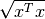.
>>> abs(x)
# norm of a (4 x 1)- expression: ||x|| #
In the case where the affine expression is a matrix, abs() returns its
Frobenius norm, defined as  .
.
>>> abs(Z[1]-2*A[0].T)
# norm of a (4 x 2)- expression: ||Z[1] -2.0*A[0].T|| #
Note that the absolute value of a scalar expression is stored as a norm:
>>> abs(t)
# norm of a (1 x 1)- expression: ||t|| #
However, a scalar constraint of the form  is handled as two linear constraints by PICOS, and so a problem with the latter
constraint
can be solved even if you do not have a SOCP solver available.
Besides, note that the string representation of an absolute value uses the double bar notation.
(Recall that the single bar notation |t| is used to denote the vector
whose all values are t).
is handled as two linear constraints by PICOS, and so a problem with the latter
constraint
can be solved even if you do not have a SOCP solver available.
Besides, note that the string representation of an absolute value uses the double bar notation.
(Recall that the single bar notation |t| is used to denote the vector
whose all values are t).
It is also possible to use other  norms in picos, cf. this paragraph .
norms in picos, cf. this paragraph .
Quadratic Expressions¶
Quadratic expressions can be formed in several ways:
>>> t**2 - x[1]*x[2] + 2*t - alpha #sum of linear and quadratic terms
#quadratic expression: t**2 -x[1]*x[2] + 2.0*t -alpha #
>>> (x[1]-2) * (t+4) #product of two affine expressions
#quadratic expression: ( x[1] -2.0 )*( t + 4.0 ) #
>>> Y[0,:]*x #Row vector multiplied by column vector
#quadratic expression: Y[0,:]*x #
>>> (x +2 | Z[1][:,1]) #scalar product of affine expressions
#quadratic expression: 〈 x + |2.0| | Z[1][:,1] 〉 #
>>> abs(x)**2 #recall that abs(x) is the euclidean norm of x
#quadratic expression: ||x||**2 #
>>> (t & alpha) * A[1] * x #quadratic form
#quadratic expression: [t,alpha]*A[1]*x #
It is not possible (yet) to make a multidimensional quadratic expression.
Constraints¶
A constraint takes the form of two expressions separated by a relation operator.
Linear (in)equalities¶
Linear (in)equalities are understood elementwise. The strict operators < and > denote weak inequalities (less or equal than and larger or equal than). For example:
>>> (1|x) < 2 #sum of the x[i] less or equal than 2
# (1x1)-affine constraint: 〈 |1| | x 〉 < 2.0 #
>>> Z[0] * A[0] > b[1]*b[2].T #A 4x4-elementwise inequality
# (4x4)-affine constraint: Z[0]*A[0] > b[1]*b[2].T #
>>> pic.sum([A[i]*Z[i] for i in range(5)],'i','[5]') == 0 #A 2x2 equality. The RHS is the all-zero matrix
# (2x2)-affine constraint: Σ_{i in [5]} A[i]*Z[i] = |0| #
Constraints can be added in the problem with the function add_constraint():
>>> for i in range(1,5):
... prob.add_constraint(Z[i]==Z[i-1]+Y.T)
>>> print prob
---------------------
optimization problem (MIP):
59 variables, 32 affine constraints
w : dict of 6 variables, (1, 1), binary
Z : list of 5 variables, (4, 2), continuous
t : (1, 1), continuous
Y : (2, 4), continuous
x : (4, 1), integer
maximize 〈 A[0] | Y 〉 -t
such that
Z[1] = Z[0] + Y.T
Z[2] = Z[1] + Y.T
Z[3] = Z[2] + Y.T
Z[4] = Z[3] + Y.T
---------------------
The constraints of the problem can then be accessed with the function get_constraint():
>>> prob.get_constraint(2) #constraints are numbered from 0
# (4x2)-affine constraint: Z[3] = Z[2] + Y.T #
An alternative is to pass the constraint with the option ret = True, which has the effect to return a reference to the constraint you want to add. In particular, this reference can be useful to access the optimal dual variable of the constraint, once the problem will have been solved.
>>> mycons = prob.add_constraint(Z[4]+Z[0] == Y.T, ret = True)
>>> print mycons
# (4x2)-affine constraint : Z[4] + Z[0] = Y.T #
Groupping constraints¶
In order to have a more compact string representation of the problem, it is advised to use the function add_list_of_constraints(), which works similarly as the function sum().
>>> prob.remove_all_constraints() #we first remove the 4 constraints precedently added
>>> prob.add_constraint(Y>0) #a single constraint
>>> prob.add_list_of_constraints([Z[i]==Z[i-1]+Y.T for i in range(1,5)],'i','1...4') #the same list of constraints as above
>>> print prob
---------------------
optimization problem (MIP):
59 variables, 40 affine constraints
w : dict of 6 variables, (1, 1), binary
Z : list of 5 variables, (4, 2), continuous
t : (1, 1), continuous
Y : (2, 4), continuous
x : (4, 1), integer
maximize 〈 A[0] | Y 〉 -t
such that
Y > |0|
Z[i] = Z[i-1] + Y.T for all i in 1...4
---------------------
Now, the constraint Z[3] = Z[2] + Y.T, which has been entered in 4th position, can either be accessed by prob.get_constraint(3) (3 because constraints are numbered from 0), or by
>>> prob.get_constraint((1,2))
# (4x2)-affine constraint: Z[3] = Z[2] + Y.T #
where (1,2) means the 3rd constraint of the 2d group of constraints, with zero-based numbering.
Similarly, the constraint Y > |0| can be accessed by prob.get_constraint(0) (first constraint), prob.get_constraint((0,0)) (first constraint of the first group), or prob.get_constraint((0,)) (unique constraint of the first group).
Flow constraints in Graphs¶
Flow constraints in graphs are entered using a Networkx Graph. The following example finds a (trivial) maximal flow from 'S' to 'T' in G.
>>> import networkx as nx
>>> G = nx.DiGraph()
>>> G.add_edge('S','A', capacity=1); G.add_edge('A','B', capacity=1); G.add_edge('B','T', capacity=1)
>>> pb = pic.Problem()
>>> # Adding the flow variables
>>> f={}
>>> for e in G.edges():
... f[e]=pb.add_variable('f[{0}]'.format(e),1)
>>> # A variable for the value of the flow
>>> F = pb.add_variable('F',1)
>>> # Creating the flow constraint
>>> flowCons = pic.flow_Constraint(G, f, source='S', sink='T', capacity='capacity', flow_value= F, graphName='G')
>>> pb.addConstraint(flowCons)
>>> pb.set_objective('max',F)
>>> sol = pb.solve(verbose=0)
>>> flow = pic.tools.eval_dict(f)
Picos allows you to define single source - multiple sinks problems. You can use the same syntax as for a single source - single sink problems. Just add a list of sinks and a list of flows instead.
Warning
The function flow_Constraint() cannot take both multiple sources and multiple sinks. Multicommodity flows will be supported in the next release.
import picos as pic
import networkx as nx
G=nx.DiGraph()
G.add_edge('S','A', capacity=2); G.add_edge('S','B', capacity=2)
G.add_edge('A','T1', capacity=2); G.add_edge('B','T2', capacity=2)
pbMultipleSinks=pic.Problem()
# Flow variable
f={}
for e in G.edges():
f[e]=pbMultipleSinks.add_variable('f[{0}]'.format(e),1)
# Flow value
F1=pbMultipleSinks.add_variable('F1',1)
F2=pbMultipleSinks.add_variable('F2',1)
flowCons = pic.flow_Constraint(G, f, source='S', sink=['T1','T2'], capacity='capacity', flow_value=[F1, F2], graphName='G')
pbMultipleSinks.add_constraint(flowCons)
pbMultipleSinks.set_objective('max',F1+F2)
# Solve the problem
pbMultipleSinks.solve(verbose=0)
print pbMultipleSinks
print 'The optimal flow F1 has value {0}'.format(F1)
print 'The optimal flow F2 has value {0}'.format(F2)
---------------------
optimization problem (LP):
6 variables, 12 affine constraints
f : dict of 4 variables, (1, 1), continuous
F1 : (1, 1), continuous
F2 : (1, 1), continuous
maximize F1 + F2
such that
** One Source, Multiple Sinks **
Flow conservation in G from S to T1 with value F1
Flow conservation in G from S to T2 with value F2
---------------------
The optimal flow F1 has value 2.0
The optimal flow F2 has value 2.0
A similar syntax can be used for multiple sources-single sink flows.
Quadratic constraints¶
Quadratic inequalities are entered in the following way:
>>> t**2 > 2*t - alpha + x[1]*x[2]
#Quadratic constraint -t**2 + 2.0*t -alpha + x[1]*x[2] < 0 #
>>> (t & alpha) * A[1] * x + (x +2 | Z[1][:,1]) < 3*(1|Y)-alpha
#Quadratic constraint [t,alpha]*A[1]*x + 〈 x + |2.0| | Z[1][:,1] 〉 -(3.0*〈 |1| | Y 〉 -alpha) < 0 #
Note that PICOS does not check the convexity of convex constraints. The solver will raise an Exception if it does not support non-convex quadratics.
Second Order Cone Constraints¶
There are two types of second order cone constraints supported in PICOS.
- The constraints of the type 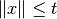, where
is a scalar affine expression and
is a multidimensional affine expression (possibly a matrix, in which case the norm is Frobenius). This inequality forces the vector
to belong to a Lorrentz-Cone (also called ice-cream cone)
- The constraints of the type
, where
are scalar affine expressions and
inside a rotated version of the Lorretz cone. When a constraint of the form abs(x)**2 < t*u is passed to PICOS, it is implicitely assumed that t is nonnegative, and the constraint is handled as the equivalent, standard ice-cream cone constraint
.
A few examples:
>>> abs(x) < (2|x-1) #A simple ice-cream cone constraint
# (4x1)-SOC constraint: ||x|| < 〈 |2.0| | x -|1| 〉 #
>>> abs(Y+Z[0].T) < t+alpha #SOC constraint with Frobenius norm
# (2x4)-SOC constraint: ||Y + Z[0].T|| < t + alpha #
>>> abs(Z[1][:,0])**2 < (2*t-alpha)*(x[2]-x[-1]) #Rotated SOC constraint
# (4x1)-Rotated SOC constraint: ||Z[1][:,0]||^2 < ( 2.0*t -alpha)( x[2] -(x[-1])) #
>>> t**2 < D['Elisa']+t #t**2 is understood as the squared norm of [t]
# (1x1)-Rotated SOC constraint: ||t||^2 < D[Elisa] + t #
>>> 1 < (t-1)*(x[2]+x[3]) #1 is understood as the squared norm of [1]
# (1x1)-Rotated SOC constraint: 1.0 < ( t -1.0)( x[2] + x[3]) #
Semidefinite Constraints¶
Linear matrix inequalities (LMI) can be entered thanks to an overload of the operators << and >>. For example, the LMI
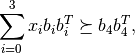
where  is used to denote the Löwner ordering,
is passed to PICOS by writing:
is used to denote the Löwner ordering,
is passed to PICOS by writing:
>>> pic.sum([x[i]*b[i]*b[i].T for i in range(4)],'i','0...3') >> b[4]*b[4].T
# (4x4)-LMI constraint Σ_{i in 0...3} x[i]*b[i]*b[i].T ≽ b[4]*b[4].T #
Note the difference with
>>> pic.sum([x[i]*b[i]*b[i].T for i in range(4)],'i','0...3') > b[4]*b[4].T
# (4x4)-affine constraint: Σ_{i in 0...3} x[i]*b[i]*b[i].T > b[4]*b[4].T #
which yields an elementwise inequality.
For convenience, it is possible to add a symmetric matrix variable X, by specifying the option vtype=symmetric. This has the effect to store all the affine expressions which depend on X as a function of its lower triangular elements only.
>>> sdp = pic.Problem()
>>> X = sdp.add_variable('X',(4,4),vtype='symmetric')
>>> sdp.add_constraint(X >> 0)
>>> print sdp
---------------------
optimization problem (SDP):
10 variables, 0 affine constraints, 10 vars in 1 SD cones
X : (4, 4), symmetric
find vars
such that
X ≽ |0|
---------------------
In this example, you see indeed that the problem has 10=(4*5)/2 variables, which correspond to the lower triangular elements of X.
Warning
When a constraint of the form A >> B is passed to PICOS, it is not assumed that A-B is symmetric. Instead, the symmetric matrix whose lower triangular elements are those of A-B is forced to be positive semidefnite. So, in the cases where A-B is not implicitely forced to be symmetric, you should add a constraint of the form A-B==(A-B).T in the problem.
Inequalities involving geometric means¶
It is possible to enter an inequality of the form

in PICOS, where
is a scalar affine expression and is an affine expression
of dimension  (possibly a matrix, in which case
(possibly a matrix, in which case
 is counted in column major order).
This inequality is internally converted to an equivalent set of
second order cone inequalities, by using standard techniques
(cf. e.g. [1]).
is counted in column major order).
This inequality is internally converted to an equivalent set of
second order cone inequalities, by using standard techniques
(cf. e.g. [1]).
Many convex constraints can be formulated using inequalities that involve
a geometric mean. For example,  is equivalent
to
is equivalent
to  , which can be entered in PICOS
thanks to the function picos.geomean() :
, which can be entered in PICOS
thanks to the function picos.geomean() :
>>> t < pic.geomean(t //x[1] //x[1] //1)
# geometric mean ineq : t<geomean( [t;x[1];x[1];1.0])#
Note that the latter example can also be passed to picos in a more simple way, thanks to an overloading of the ** exponentiation operator:
>>> t < x[1]**(2./3)
# pth power ineq : ( x[1])**2/3>t#
Inequalities involving geometric means are stored in a temporary object of the class GeoMeanConstraint, which can be passed to a problem with add_constraint():
>>> geom_ineq = prob.add_constraint(t<pic.geomean(Y[:6]), ret=True)
When the option ret = True is used to pass an inequality with a geometric mean, the object of the class GeoMeanConstraint is returned. This object has an attribute Ptmp which contains all the SOC inequalities that are used internally to represent the geometric mean:
>>> geom_ineq.Ptmp.constraints
[# (1x1)-Rotated SOC constraint: ||u[1:0-1]||^2 < ( Y[:6][0])( Y[:6][1]) #,
# (1x1)-Rotated SOC constraint: ||u[1:2-3]||^2 < ( Y[:6][2])( Y[:6][3]) #,
# (1x1)-Rotated SOC constraint: ||u[1:4-5]||^2 < ( Y[:6][4])( Y[:6][5]) #,
# (1x1)-Rotated SOC constraint: ||u[2:0-3]||^2 < ( u[1:0-1])( u[1:2-3]) #,
# (1x1)-Rotated SOC constraint: ||u[2:4-x]||^2 < ( u[1:4-5])( t) #,
# (1x1)-Rotated SOC constraint: ||t||^2 < ( u[2:0-3])( u[2:4-x]) #]
Inequalities involving real powers or trace of matrix powers¶
As mentionned above, the ** exponentiation operator has been overloaded to support real exponents. A rational approximation of the exponent is used, and the inequality are internally reformulated as a set of equivalent SOC inequalities. Note that only inequalities defining a convex regions can be passed:
>>> t**0.6666 > x[0]
# pth power ineq : ( t)**2/3>x[0]#
>>> t**-0.5 < x[0]
# pth power ineq : ( t)**-1/2<x[0]#
>>> try:
... t**-0.5 > x[0]
... except Exception as ex:
... print 'Exception: '+str(ex)
Exception: >= operator can be used only when the function is concave (0<p<=1)
>>> t**2 < x[1]+x[2]
# (1x1)-Rotated SOC constraint: ||t||^2 < x[1] + x[2] #
More generally, inequalities involving trace of matrix powers can be passed to PICOS, by using the picos.tracepow() function. The following example creates the constraint
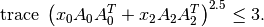
>>> pic.tracepow(x[0] * A[0]*A[0].T + x[2] * A[2]*A[2].T, 2.5) <= 3
# trace of pth power ineq : trace( x[0]*A[0]*A[0].T + x[2]*A[2]*A[2].T)**5/2<3.0#
Warning
when a power expression 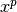 (resp. the trace of matrix power 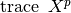 ) is used, the base
is forced to be positive semidefinite) by picos.
When the exponent is  ,
it is also possible to represent constraints of the form
,
it is also possible to represent constraints of the form
 with SDPs, where
with SDPs, where  , see [2].
, see [2].
>>> pic.tracepow(X, 0.6666, coef = A[0].T*A[0]) >= t
# trace of pth power ineq : trace[ A[0].T*A[0] *(X)**2/3]>t#
As for geometric means, inequalities involving real powers are stored in a temporary object of the class TracePow_Constraint, which contains a field Ptmp , a Problem instance with all the SOC or SDP constraints used to represent the original inequality.
Inequalities involving generalized p-norm¶
Inequalities of the form  can be entered by using the
function picos.norm(). This function is also defined for
can be entered by using the
function picos.norm(). This function is also defined for  by the usual formula 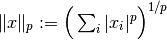.
The norm function is convex over
by the usual formula 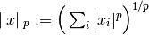.
The norm function is convex over  for all
for all  , and
concave over the set of vectors with nonnegative coordinates for
, and
concave over the set of vectors with nonnegative coordinates for  .
.
>>> pic.norm(x,3) < t
# p-norm ineq : norm_3( x)<t#
>>> pic.norm(x,'inf') < 2
# p-norm ineq : norm_inf( x)<2.0#
>>> pic.norm(x,0.5) > x[0]-x[1]
# generalized p-norm ineq : norm_1/2( x)>x[0] -x[1]#
Warning
Note that when a constraint of the form norm(x,p) >= t is entered (with ),
PICOS forces the vector x to be nonnegative (componentwise).
Inequalities involving the generalized 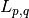 norm of a matrix can also be handled with picos, cf. the documentation of picos.norm() .
As for geometric means, inequalities involving p-norms are stored in a temporary object of the class NormP_Constraint, which contains a field Ptmp , a Problem instance with all the SOC constraints used to represent the original inequality.
Inequalities involving the nth root of a determinant¶
The function picos.detrootn()
can be used to enter the th root of the determinant of a
:math:`(n times n)-`symmetric positive semidefinite matrix:
>>> M = sdp.add_variable('M',(5,5),'symmetric')
>>> t < pic.detrootn(M)
# nth root of det ineq : det( M)**1/5>t#
Warning
Note that when a constraint of the form t < pic.detrootn(M) is entered (with ),
PICOS forces the matrix M to be positive semidefinite.
As for geometric means, inequalities involving the nth root of a determinant are stored in a temporary object of the class DetRootN_Constraint, which contains a field Ptmp , a Problem instance with all the SOC and SDP constraints used to represent the original inequality.
Set membership¶
Since Picos 1.0.2, there is a Set class that can be used to pass constraints as membership of an affine expression to a set.
Following sets are currently supported:
can be constructed with the function pic.ball()
- The standard simplex (scaled by a factor
) 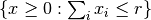 can be constructed with the function pic.simplex()
- Truncated simplexes 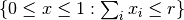 and symmetrized Truncated simplexes
can be constructed with the function pic.truncated_simplex()
Membership of an affine expression to a set can be expressed with the overloaded operator <<. This returns a temporary object that can be passed to a picos problem with the function add_constraint() .
>>> x << pic.simplex(1)
# (5x1)-affine constraint: x in standard simplex #
>>> x << pic.truncated_simplex(2)
# (9x1)-affine constraint: x in truncated simplex of radius 2 #
>>> x << pic.truncated_simplex(2,sym=True)
# symmetrized truncated simplex constraint : ||x||_{infty;1} <= {1;2}#
>>> x << pic.ball(3)
# (4x1)-SOC constraint: ||x|| < 3.0 #
>>> pic.ball(2,'inf') >> x
# p-norm ineq : norm_inf( x)<2.0#
>>> x << pic.ball(4,1.5)
# p-norm ineq : norm_3/2( x)<4.0#
Write a Problem to a file¶
It is possible to write a problem to a file, thanks to the function write_to_file(). Several file formats and file writers are available, have a look at the doc of write_to_file() for more explanations.
Below is a hello world example, which writes a simple MIP to a .lp file:
import picos as pic
prob = pic.Problem()
y = prob.add_variable('y',1, vtype='integer')
x = prob.add_variable('x',1)
prob.add_constraint(x>1.5)
prob.add_constraint(y-x>0.7)
prob.set_objective('min',y)
#let first picos display the problem
print prob
print
#now write the problem to a .lp file...
prob.write_to_file('helloworld.lp')
print
#and display the content of the freshly created file:
print open('helloworld.lp').read()
Generated output:
---------------------
optimization problem (MIP):
2 variables, 2 affine constraints
y : (1, 1), integer
x : (1, 1), continuous
minimize y
such that
x > 1.5
y -x > 0.7
---------------------
writing problem in helloworld.lp...
done.
\* file helloworld.lp generated by picos*\
Minimize
obj : 1 y
Subject To
in0 : -1 y+ 1 x <= -0.7
Bounds
y free
1.5 <= x<= +inf
Generals
y
Binaries
End
Solve a Problem¶
To solve a problem, you have to use the method solve() of the class Problem. Alternatively, the functions maximize(obj) and minimize(obj) can be used to specify the objective function and call the solver in a single statement. These method accept several options. In particular the solver can be specified by passing an option of the form solver='solver_name'. For a list of available parameters with their default values, see the doc of the function set_all_options_to_default().
Once a problem has been solved, the optimal values of the variables are accessible with the value property. Depending on the solver, you can also obtain the slack and the optimal dual variables of the constraints thanks to the properties dual and slack of the class Constraint. See the doc of dual for more explanations on the dual variables for second order cone programs (SOCP) and semidefinite programs (SDP).
The class Problem also has two interesting properties: type, which indicates the class of the optimization problem (‘LP’, ‘SOCP’, ‘MIP’, ‘SDP’,...), and status, which indicates if the problem has been solved (the default is 'unsolved'; after a call to solve() this property can take the value of any code returned by a solver, such as 'optimal', 'unbounded', 'near-optimal', 'primal infeasible', 'unknown', ...).
Below is a simple example, to solve the linear programm:
![\begin{center}
$\begin{array}{ccc}
\underset{x \in \mathbb{R}^2}{\mbox{minimize}}
& 0.5 x_1 + x_2 &\\
\mbox{subject to} & x_1 &\geq x_2\\
& \left[
\begin{array}{cc}
1 & 0\\
1 & 1
\end{array}
\right] x &\leq
\left[
\begin{array}{c} 3 \\4 \end{array}
\right].
\end{array}$
\end{center}](_images/math/85a830885b98f9ea495932dd186dbdbf84e6cf23.png)
More examples can be found here.
P = pic.Problem()
A = pic.new_param('A', cvx.matrix([[1,1],[0,1]]) )
x = P.add_variable('x',2)
P.add_constraint(x[0]>x[1])
P.add_constraint(A*x<[3,4])
objective = 0.5 * x[0] + x[1]
P.set_objective('max', objective) #or directly P.maximize(objective)
#display the problem and solve it
print P
print 'type: '+P.type
print 'status: '+P.status
P.solve(solver='cvxopt',verbose=False)
print 'status: '+P.status
#--------------------#
# objective value #
#--------------------#
print 'the optimal value of this problem is:'
print P.obj_value() #"print objective" would also work, because objective is valued
#--------------------#
# optimal variable #
#--------------------#
x_opt = x.value
print 'The solution of the problem is:'
print x_opt #"print x" would also work, since x is now valued
print
#--------------------#
# slacks and duals #
#--------------------#
c0=P.get_constraint(0)
print 'The dual of the constraint'
print c0
print 'is:'
print c0.dual
print 'And its slack is:'
print c0.slack
print
c1=P.get_constraint(1)
print 'The dual of the constraint'
print c1
print 'is:'
print c1.dual
print 'And its slack is:'
print c1.slack
---------------------
optimization problem (LP):
2 variables, 3 affine constraints
x : (2, 1), continuous
maximize 0.5*x[0] + x[1]
such that
x[0] > x[1]
A*x < [ 2 x 1 MAT ]
---------------------
type: LP
status: unsolved
status: optimal
the optimal value of this problem is:
3.0000000002
The solution of the problem is:
[ 2.00e+00]
[ 2.00e+00]
The dual of the constraint
# (1x1)-affine constraint : x[0] > x[1] #
is:
[ 2.50e-01]
And its slack is:
[ 1.83e-09]
The dual of the constraint
# (2x1)-affine constraint : A*x < [ 2 x 1 MAT ] #
is:
[ 4.56e-10]
[ 7.50e-01]
And its slack is:
[ 1.00e+00]
[-8.71e-10]
A note on dual variables¶
For second order cone constraints of the form  ,
where
,
where  is a vector of dimension ,
the dual variable is a vector of dimension
is a vector of dimension ,
the dual variable is a vector of dimension  of the form
of the form
![[\lambda; \mathbf{z}]](_images/math/1f9c30812a9b4234e3eb4123c524e5d11d6efe92.png) , where the 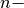 dimensional vector
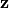 satisfies 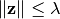.
, where the 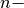 dimensional vector
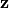 satisfies 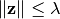.
Since rotated second order cone constraints of the form
 ,
are handled as the equivalent ice-cream constraint
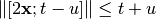,
the dual is given with respect to this reformulated, standard SOC constraint.
,
are handled as the equivalent ice-cream constraint
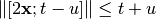,
the dual is given with respect to this reformulated, standard SOC constraint.
In general, a linear problem with second order cone constraints (both standard and rotated) and semidefinite constraints can be written under the form:
![\begin{center}
$\begin{array}{cclc}
\underset{\mathbf{x} \in \mathbb{R}^n}{\mbox{minimize}}
& \mathbf{c}^T \mathbf{x} & &\\
\mbox{subject to} & A^e \mathbf{x} + \mathbf{b^e} & = 0 &\\
& A^l \mathbf{x} + \mathbf{b^l} & \leq 0 &\\
& \Vert A^s_i \mathbf{x} + \mathbf{b^s_i} \Vert &\leq \mathbf{f^s_i}^T \mathbf{x} +d^s_i, & \forall i \in I\\
& \Vert A^r_j \mathbf{x} + \mathbf{b^r_j} \Vert^2 &\leq (\mathbf{f^{r_1}_j}^T \mathbf{x} +d^{r_1}_j) (\mathbf{f^{r_2}_j}^T \mathbf{x} +d^{r_2}_j), & \forall j \in J\\
& 0 & \leq \mathbf{f^{r_1}_j}^T \mathbf{x} +d^{r_1}_j, & \forall j \in J\\
& \sum_{i=1}^n x_i M_i & \succeq M_0
\end{array}$
\end{center}](_images/math/ed8ea3e224f814c91d7db080977880fcd3e17624.png)
where
are vectors of dimension
- 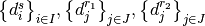 are scalars;
are vectors of dimension
and
are matrices of size
;
are vectors of dimension
and
are matrices of size
;
is a vector of dimension
and 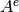 is a matrix of size
;
- 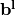 is a vector of dimension
and
is a matrix of size
;
are
symmetric matrices (
).
Its dual problem can be written as:
![\begin{center}
$\begin{array}{cll}
\mbox{maximize} & \mathbf{b^e}^T \mathbf{\mu^e}
+ \mathbf{b^l}^T \mathbf{\mu^l} &
+ \sum_{i\in I} \big( \mathbf{b^s_i}^T \mathbf{z^s_i} - d^s_i \lambda_i \big)
+ \sum_{j\in J} \big( \mathbf{b^r_j}^T \mathbf{z^r_j} - d^{r_1}_j \alpha_j - d^{r_2}_j \beta_j \big)
+ \langle M_0, X \rangle\\
\mbox{subject to} & c + {A^e}^T \mathbf{\mu^e} + {A^l}^T \mathbf{\mu^l} &
+ \sum_{i\in I} \big( {A^s_i}^T \mathbf{z^s_i} -\lambda_i \mathbf{f^s_i} \big)
+ \sum_{j\in J} \big( {A^r_j}^T \mathbf{z^r_j} -\alpha_j \mathbf{f^{r_1}_j} - \beta_j \mathbf{f^{r_2}_j} \big)
= \mathcal{M} \bullet X \\
& \mu_l \geq 0 &\\
& \Vert \mathbf{z^s_i} \Vert \leq \lambda_i, &\forall i \in I\\
& \Vert \mathbf{z^r_j} \Vert^2 \leq 4 \alpha_j \beta_j, &\forall j \in J\\
& \ \ 0 \ \ \ \leq \alpha_j, &\forall j \in J\\
& X \succeq 0
\end{array}$
\end{center}](_images/math/b387a4530e67905b9a94622a8adab8b9fa62285a.png)
where  stands for the vector of dimension
with 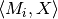 on the
stands for the vector of dimension
with 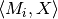 on the  th coordinate, and the dual variables
are
th coordinate, and the dual variables
are
- 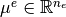
- 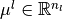
- 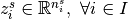
- 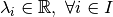
- 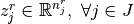
- 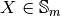

When quering the dual of a constraint of the above primal problem, picos will return
for the constraint
;
for the constraint 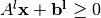;
The
dimensional vector 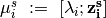 for the constraint
;
The
dimensional vector
for the constraint
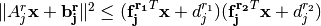
In other words, if the dual vector returned by picos is of the form 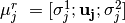, where 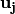 is of dimension
The symmetric positive definite matrix
.
References¶
- “Applications of second-order cone programming”, M.S. Lobo, L. Vandenberghe, S. Boyd and H. Lebret, Linear Algebra and its Applications, 284, p. 193-228, 1998.
- “On the semidefinite representations of real functions applied to symmetric matrices”, G. Sagnol, Linear Algebra and its Applications, 439(10), p. 2829-2843, 2013.